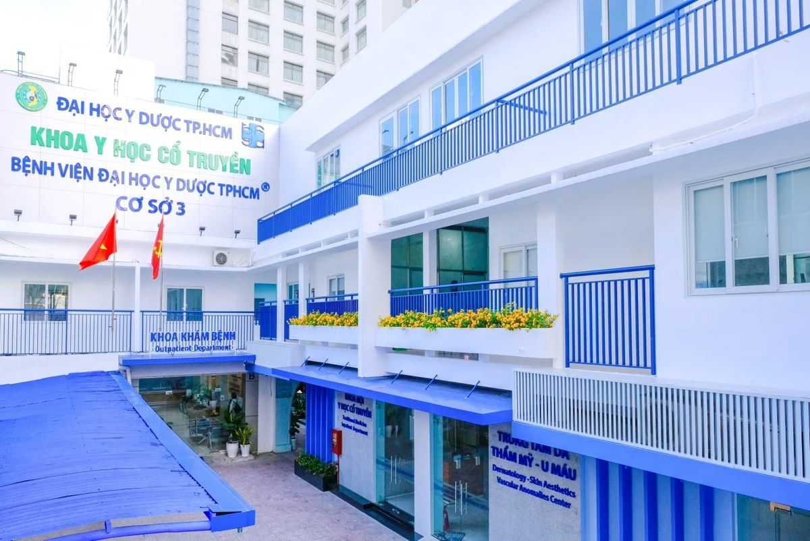
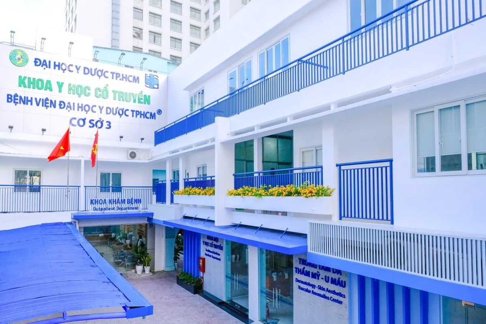

Hướng dẫn đặt khám nhanh Bệnh Viện Đại Học Y Dược TP.HCM
- Chọn Đặt khám theo Chuyên khoa / Bác sĩ
- Tạo Hồ sơ thông tin khám bệnh
- Chọn Chuyên khoa / Bác sĩ
- Chọn Lịch khám theo thời gian phù hợp
- Chọn hình thức thanh toán và Xác nhận
- Nhận phiếu đặt khám thành công
- Đến khám đúng lịch hẹn
Tìm hiểu thông tin về Bệnh viện Đại Học Y Dược TP.HCM:
Bệnh Viện Đại Học Y Dược Thành Phố Hồ Chí Minh – Cơ Sở 1, tọa lạc
tại Quận 5, Thành phố Hồ Chí Minh, là một trong những trung tâm y
tế uy tín và đáng tin cậy nhất trong cộng đồng. Với tầm nhìn và
phương châm
“Thấu hiểu nỗi đau – Niềm tin của bạn”, bệnh viện
đã xây dựng một sứ mệnh chăm sóc sức khỏe với sự tận tâm và chất
lượng cao.
Tổng quan Bệnh viện
Bệnh viện Đại học Y Dược Thành phố Hồ Chí Minh hiện có
03 cơ sở, trong đó trụ sở chính đặt tại
215 Hồng Bàng, Phường 11, Quận 5. Từ năm
2013, bệnh viện đã mở rộng và đưa vào hoạt động
tòa nhà 17 tầng nhằm đáp ứng nhu cầu khám ngoại
trú và điều trị nội trú ngày càng tăng của người dân.
Đây là công trình đạt
tiêu chuẩn bệnh viện quốc tế, mang đến môi trường
khám chữa bệnh
tiện nghi, xanh – sạch – đẹp và an toàn
cho bệnh nhân cùng thân nhân.
Trung bình mỗi năm, bệnh viện tiếp nhận hơn
2 triệu lượt khám ngoại trú (tương đương khoảng
7.000 lượt/ngày), điều trị nội trú cho khoảng
55.000 bệnh nhân và thực hiện gần
30.000 ca phẫu thuật, khẳng định vị thế là một
trong những cơ sở y tế hàng đầu cả nước.
Chất lượng và Tầm nhìn
Bệnh viện Đại học Y Dược Thành phố Hồ Chí Minh luôn nỗ lực phát
huy những
giá trị cốt lõi bền vững, hướng đến sự phát triển
toàn diện trong lĩnh vực y tế.
Bệnh viện tiên phong trong
điều trị, nghiên cứu khoa học, đào tạo và quản trị, không ngừng đổi mới để nâng cao chất lượng khám chữa bệnh và
hiệu quả phục vụ cộng đồng.
Với tinh thần
thấu hiểu nỗi đau cả về thể xác lẫn tinh thần của người
bệnh, đội ngũ y bác sĩ luôn đưa ra những
giải pháp điều trị tối ưu, đặt sức khỏe và sự an
tâm của người bệnh lên hàng đầu.
Đồng thời, bệnh viện luôn giữ vững
sự chuẩn mực của người thầy giáo – thầy thuốc,
chú trọng quản lý chất lượng và
đảm bảo an toàn
cho người bệnh cũng như toàn thể nhân viên y tế.
Phục vụ và Phát triển
Là một bệnh viện trực thuộc trường đại học, Bệnh viện Đại học Y
Dược Thành phố Hồ Chí Minh không chỉ tập trung vào việc
nâng cao chất lượng chuyên môn và dịch vụ y tế,
mà còn mong muốn mỗi người dân khi đến khám chữa bệnh luôn
nhận được chất lượng chăm sóc sức khỏe tốt nhất
và vượt trên sự mong đợi.
Trong thời gian tới, bệnh viện hướng đến mục tiêu
xây dựng hệ thống trung tâm chuyên khoa sâu đạt chuẩn quốc
tế, ứng dụng các kỹ thuật hiện đại trong khám và
điều trị.
Đồng thời, Bệnh viện Đại học Y Dược Thành phố Hồ Chí Minh còn là
môi trường đào tạo nguồn nhân lực y tế chất lượng cao, góp phần phát triển ngành Y tế và
chuyển giao mô hình quản lý cho các cơ sở y tế có
nhu cầu.
Chính sách chất lượng
Chính sách chất lượng của Bệnh viện Đại học Y Dược Thành phố Hồ
Chí Minh được tóm gọn và định hình bởi bốn yếu tố cốt lõi:
An Toàn, Hiệu Quả,
Cải Tiến Liên Tục và
Phát Triển Bền Vững.
Bệnh viện cam kết
đảm bảo an toàn cho người bệnh và nhân viên y tế,
ứng dụng các kỹ thuật hiện đại nhằm nâng cao hiệu
quả điều trị, không ngừng
cải thiện chất lượng dịch vụ, hướng đến sự
phát triển bền vững trong dài hạn.
Phòng - Trung Tâm - Khoa - Đơn Vị
Dưới đây là danh sách các Phòng,
Trung tâm, Khoa,
Khoa Cận Lâm sàng và Đơn vị đang
hoạt động tại Bệnh viện Đại học Y Dược TP.HCM.
Các đơn vị này cung cấp dịch vụ y tế đa dạng, chuyên sâu, đáp ứng
đầy đủ nhu cầu khám và điều trị của người bệnh.
Phòng:
Kế hoạch tổng hợp, Tổ chức cán bộ, Điều dưỡng, Tài chính kế toán,
Khoa học và Đào tạo, Công nghệ thông tin, Vật tư thiết bị, Công
tác xã hội, Hành chính, Quản lý chất lượng, Quản trị tòa nhà, Bảo
hiểm y tế, Truyền thông.
Trung tâm:
Huấn luyện và Phẫu thuật Nội soi, Khoa học thần kinh, Tim mạch,
Ung thư, Nghiên cứu lâm sàng.
Khoa Lâm sàng:
Cấp cứu, Phục hồi chức năng, Khám bệnh, Ngoại Tiêu hóa, Nội Tiết,
Ngoại Gan – Mật – Tụy, Nội Tim mạch, Hậu môn – Trực tràng, Tim
mạch can thiệp, Gây mê – Hồi sức, Thần kinh, Hồi sức tích cực, Tai
– Mũi – Họng, Lão – Chăm sóc giảm nhẹ, Phụ sản, Tiết niệu, Tiêu
hóa, Ngoại Thần kinh, Chấn thương chỉnh hình, Phẫu thuật Hàm Mặt –
Răng Hàm Mặt, Hóa trị ung thư, Lồng ngực – Mạch máu, Nội thận –
Thận nhân tạo, Mắt, Nội cơ xương khớp, Tạo hình Thẩm mỹ, Da liễu –
Thẩm mỹ da, Phẫu thuật tim mạch người lớn, Niệu học chức năng,
Tuyến vú, Khám sức khỏe theo yêu cầu, Sơ sinh.
Khoa Cận Lâm sàng:
Chẩn đoán hình ảnh, Nội soi, Thăm dò chức năng hô hấp, Xét nghiệm,
Kiểm soát nhiễm khuẩn, Dược, Giải phẫu bệnh, Vi sinh, Dinh dưỡng –
Tiết chế, Y học hạt nhân.
Các Đơn vị:
Can thiệp mạch máu tạng, Điều trị Đau, Dị ứng – Miễn dịch lâm
sàng, Hồi sức Ngoại thần kinh, Trị liệu tế bào và Y học tái tạo,
Phẫu thuật bệnh lý cột sống và Thần kinh ngoại biên, Bệnh giới
tính nam, Can thiệp nội mạch thần kinh, Nhịp tim học, Quản lý Đái
tháo đường, Hình ảnh tim mạch, Bàn chân Đái tháo đường, Can thiệp
nội mạch, Ung thư Gan Mật và Ghép gan, Huấn luyện siêu âm tim, Rối
loạn vận động, Rối loạn giấc ngủ, Đột quỵ, Điều trị khe hở môi vòm
miệng, Tâm lý lâm sàng, Chẩn đoán trước sinh, Trí nhớ và Sa sút
trí tuệ, Sàn – Đáy chậu, Đào tạo liên tục, Bệnh viêm ruột mạn, Rối
loạn vận động tiêu hóa, Hỗ trợ sinh sản, Quản lý đấu thầu.
Thông Tin Đặt Khám
Địa chỉ:
Cơ sở 1: 215 Hồng Bàng, P.11, Q.5, TP. Hồ Chí Minh
Hotline:
1900 2115
Đặt khám trực tuyến:
https://medpro.vn/benh-vien-dai-hoc-y-duoc-co-so-1
Đặt khám qua ứng dụng Medpro:
https://medpro.vn/s/fb_dl
Medpro – nền tảng đặt khám nhanh là ứng dụng
thông minh giúp bạn quản lý sức khỏe cá nhân một cách dễ dàng và
hiệu quả. Với triết lý
lấy người dùng làm trung tâm, Bệnh viện Đại học Y
Dược Thành phố Hồ Chí Minh cùng với Medpro đã thiết kế ứng dụng
nhằm mang đến trải nghiệm tốt nhất cho người dùng thông qua sự kết
hợp của các công nghệ số hiện đại và quy trình quản trị tiên tiến
tại cơ sở y tế. Điều này giúp hệ thống chăm sóc sức khỏe trở nên
linh hoạt, tiện lợi và phù hợp với môi trường khám chữa bệnh trực
tuyến.
Tính năng nổi bật của ứng dụng
-
Đăng ký khám bệnh trực tuyến:
Với tính năng này, bạn có thể đăng ký khám bệnh qua website và
ứng dụng Medpro mà không cần đến bệnh viện xếp hàng chờ đợi.
Người dùng có thể linh hoạt đặt lịch khám theo ngày hoặc theo
bác sĩ phù hợp.
-
Thanh toán tiền khám bệnh:
Thao tác thanh toán tiền khám cũng trở nên dễ dàng hơn bao giờ
hết. Bạn có thể lựa chọn từ nhiều hình thức thanh toán như thẻ
quốc tế, thẻ ATM nội địa, Internet Banking, ví điện tử, QR
code/Mobile Banking,....
-
Tạo hồ sơ bệnh nhân:
Ứng dụng cho phép tạo và lưu trữ hồ sơ bệnh nhân cá nhân, giúp
theo dõi lịch sử khám chữa bệnh và hỗ trợ bác sĩ đưa ra phương
án điều trị phù hợp.
-
Quản lý hồ sơ bệnh nhân:
Người dùng có thể dễ dàng cập nhật và theo dõi thông tin y tế
của bản thân, từ đó chủ động hơn trong việc chăm sóc và quản lý
sức khỏe.
-
Quản lý phiếu khám bệnh:
Medpro hỗ trợ theo dõi và quản lý các phiếu khám bệnh, giúp
người dùng không bỏ lỡ lịch hẹn và tiết kiệm thời gian chờ đợi
tại bệnh viện.
-
Quản lý lịch hẹn tái khám:
Ứng dụng sẽ lưu trữ lịch hẹn tái khám và gửi thông báo khi đến
ngày, giúp người bệnh theo dõi quá trình điều trị một cách chính
xác.
-
Nhận thông báo từ bệnh viện:
Medpro sẽ cập nhật cho bạn thông tin và tin tức mới nhất của
Bệnh viện Đại học Y Dược Thành phố Hồ Chí Minh qua ứng dụng.
Điều này giúp bạn luôn nắm bắt thông tin y tế quan trọng và sự
phát triển của bệnh viện, đồng thời cảm giác yên tâm hơn khi đến
thăm khám tại bệnh viện.

 
